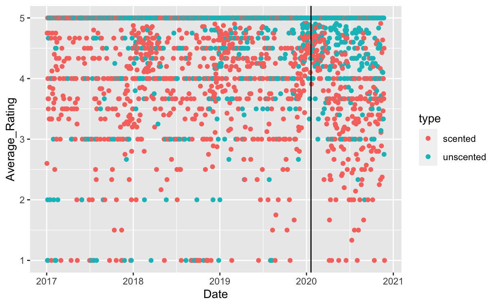
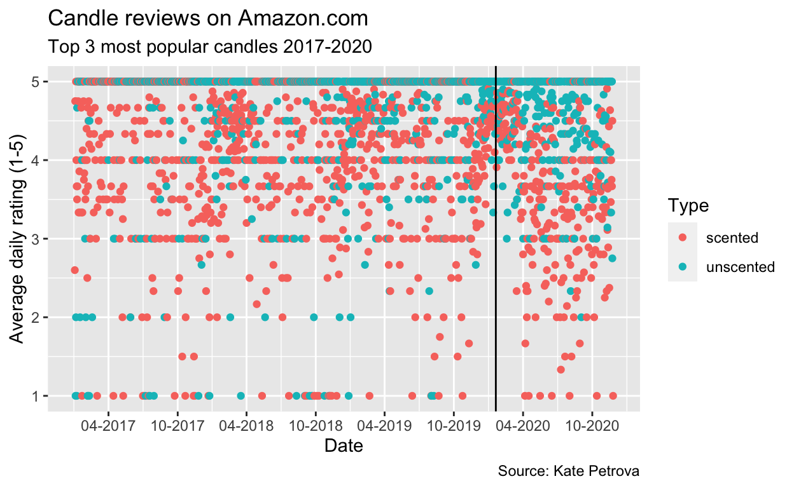

Note: All answers to exercises can be found here.
Data introduction
Before we begin, let’s bring in some data.
Download these files to your project folder.
# https://github.com/kateptrv/Candles/raw/main/Scented_all.xlsx
# https://github.com/kateptrv/Candles/raw/main/Unscented_all.xlsxThese are Excel files and not CSVs, so we need a special package to import those tricky files in. We’ll use one called readxl.
library(readxl)
scented <- read_excel("data/Scented_all.xlsx", sheet=1)
unscented <- read_excel("data/Unscented_all.xlsx", sheet=1)Let’s take a look at what were working with:
library(DT)
library(dplyr)
scented <- read_excel("data/Scented_all.xlsx", sheet=1)
unscented <- read_excel("data/Unscented_all.xlsx", sheet=1)
scented <- scented %>%
mutate(type="scented")
unscented <- unscented %>%
mutate(type="unscented")
scented <- bind_rows(scented, unscented)
scented %>%
head(4) %>%
datatable()These are more than 21,000 reviews for the top 5 rated scented and unscented candles on Amazon. It goes back years.
Let’s quickly filter this data to the top 3 candles only and figure out the Average_Rating for each day. And also count the total Reviews for each day. And we should convert the dates in the Date column with a lubridate function.
Exercise 1
Fill in the blanks with the right code.
scented_summary <- scented %>%
arrange(Date) %>%
filter(Date >= "2017-01-01") %>%
# convert the String Date into a date format using lubridate function
mutate(Date=___(Date)) %>%
filter(CandleID <= 3) %>%
group_by(Date, type) %>%
# Now how do we aggregate average and count?
_________(Average_Rating=____(Rating),
Reviews=___)
scented_summaryscented_summary <- scented %>%
arrange(Date) %>%
filter(Date >= "2017-01-01") %>%
# convert the String Date into a date format using lubridate function
mutate(Date=ymd(Date)) %>%
filter(CandleID <= 3) %>%
group_by(Date, type) %>%
# Now how do we aggregate average and count?
summarise(Average_Rating=mean(Rating),
Reviews=n())
scented_summaryHint: ymd(), group_by(), summarize(), mean(), n()
We’ve narrowed down 21,000 rows of data to a more workable 2,471.
This summarized data set will be our entry to the:
Grammar of Graphics
Here’s a quick chart. You may not understand the code yet, but I’ll break it down for you after we talk about some concepts.
ggplot(data= scented_summary) +
geom_point(mapping=aes(x= Date, y= Average_Rating, colour=type)) +
geom_vline(xintercept= ymd("2020-01-20")) +
scale_x_date(date_labels = "%m-%Y", date_breaks = "6 month")Mapping data to aesthetics
Aesthetic
Visual property of a graph
Position, shape, color, etc.
Data
- A column in a dataset
Here’s are the core components of this chart:
| Data | Aesthetic | Graphic/Geometry |
|---|---|---|
| Dates | Position (x-axis) | Point |
| Rating | Position (y-axis) | Point |
| Candle type | Color | Point |
| Single date | Position (x-intercept) | Line |
Here’s how it’s interpreted in ggplot2 code
| Data | aes() | geom |
|---|---|---|
| Dates | x | geom_point() |
| Average_Rating | y | geom_point() |
| type | color | geom_point() |
| 1/20/2020 | xintercept | geom_vline() |
ggplot() template
Here’s the dataframe called scented_summary as a reminder:
scented_summary %>% head(5)ggplot(data = DATA) +
GEOM_FUNCTION(mapping = aes(AESTHETIC MAPPINGS))–
ggplot(data = scented_summary) +
geom_point(mapping = aes(x = Date, y = Average_Rating, color = type)) +
geom_vline(xintercept=ymd("2020-01-20"))
Grammatical layers
So far we know about data, aesthetics, and geometries.
Think of these components as layers.

Add them to foundational ggplot() with +
Possible aesthetics

Possible geoms

THERE ARE SO MANY GEOMS for different visualizations. Here are the official ones.
Additional layers
There are many of other grammatical layers we can use to describe graphs.
We sequentially add layers onto the foundational ggplot() plot to create complex figures.
Scales change the properties of the variable mapping.
| Example layer | What it does |
|---|---|
scale_x_continuous()
|
Make the x-axis continuous |
scale_x_continuous(breaks = 1:5)
|
Manually specify axis ticks |
scale_x_date()
|
Considers x-axis dates |
scale_color_gradient()
|
Use a gradient |
scale_fill_viridis_d()
|
Fill with discrete viridis colors |
Look at the difference between these two charts without and with a scales function.
ggplot(data= scented_summary) +
geom_point(mapping=aes(x= Date, y= Average_Rating, color=type)) +
geom_vline(xintercept= ymd("2020-01-20"))
Check out the x-axis.
Exercise 2
Now add scale_x_date(date_labels = "%m-%Y", date_breaks = "6 month") to the bottom of the code
ggplot(data= scented_summary) +
geom_point(mapping=aes(x= Date, y= Average_Rating, color=type)) +
geom_vline(xintercept= ymd("2020-01-20")) +
# Add line above this oneggplot(data= scented_summary) +
geom_point(mapping=aes(x= Date, y= Average_Rating, color=type)) +
geom_vline(xintercept= ymd("2020-01-20")) +
scale_x_date(date_labels = "%m-%Y", date_breaks = "6 month")Do you see the difference at the bottom of the chart compared to the one above it?
Facets
Facets show subplots for different subsets of data.
| Example layer | What it does |
|---|---|
facet_wrap(vars(type))
|
Plot for each candle type |
facet_wrap(vars(type, year))
|
Plot for each candle type/year |
facet_wrap(…, ncol = 1)
|
Put all facets in one column |
facet_wrap(…, nrow = 1)
|
Put all facets in one row |
ggplot(data= scented_summary) +
geom_point(mapping=aes(x= Date, y= Average_Rating, color=type)) +
geom_vline(xintercept= ymd("2020-01-20")) +
scale_x_date(date_labels = "%m-%Y", date_breaks = "6 month") +
facet_wrap(vars(type))Exercise 3
Now, try it with nrow=1 or ncol=1
ggplot(data= scented_summary) +
geom_point(mapping=aes(x= Date, y= Average_Rating, color=type)) +
geom_vline(xintercept= ymd("2020-01-20")) +
scale_x_date(date_labels = "%m-%Y", date_breaks = "6 month") +
facet_wrap(vars(type), ___ = 1)ggplot(data= scented_summary) +
geom_point(mapping=aes(x= Date, y= Average_Rating, color=type)) +
geom_vline(xintercept= ymd("2020-01-20")) +
scale_x_date(date_labels = "%m-%Y", date_breaks = "6 month") +
facet_wrap(vars(type), ___ = 1)Labels
| Example layer | What it does |
|---|---|
labs(title = “Neat title”)
|
Title |
labs(caption = “Something”)
|
Caption |
labs(y = “Something”)
|
y-axis |
labs(color = “Type”)
|
Title of size legend |
ggplot(data= scented_summary) +
geom_point(mapping=aes(x= Date, y= Average_Rating, color=type)) +
geom_vline(xintercept= ymd("2020-01-20")) +
scale_x_date(date_labels = "%m-%Y", date_breaks = "6 month") +
labs(title = "Candle reviews on Amazon.com",
subtitle = "Top 3 most popular candles 2017-2020",
x = "Date",
y = "Average daily rating (1-5)",
color = "Type",
caption = "Source: Kate Petrova")
Theme
Change the appearance of anything in the plot.
There are many built-in themes.
| Example layer | What it does |
|---|---|
theme_grey()
|
Default grey background |
theme_bw()
|
Black and white |
theme_dark()
|
Dark |
theme_minimal()
|
Minimal |
Exercise 4
Try out the different themes listed above in the code below.
ggplot(data= scented_summary) +
geom_point(mapping=aes(x= Date, y= Average_Rating, color=type)) +
geom_vline(xintercept= ymd("2020-01-20")) +
scale_x_date(date_labels = "%m-%Y", date_breaks = "6 month") +
labs(title = "Candle reviews on Amazon.com",
subtitle = "Top 3 most popular candles",
x = "Date",
y = "Average rating",
color = "Type",
caption = "Source: Kate Petrova") +
theme______More themes
There are a collections of pre-built themes online, like the ggthemes package.
Organizations often make their own custom themes, like the BBC.

Theme adjustments
Make theme adjustments with theme()
There are a billion options here!
Add this chunk of code in the exercise below it:
theme_bw() +
theme(legend.position = "bottom",
plot.title = element_text(face = "bold"),
panel.grid = element_blank(),
axis.title.y = element_text(face = "italic"))Exercise 5
ggplot(data= scented_summary) +
geom_point(mapping=aes(x= Date, y= Average_Rating, color=type)) +
geom_vline(xintercept= ymd("2020-01-20")) +
scale_x_date(date_labels = "%m-%Y", date_breaks = "6 month") +
labs(title = "Candle reviews on Amazon.com",
subtitle = "Top 3 most popular candles",
x = "Date",
y = "Average rating",
color = "Type",
caption = "Source: Kate Petrova") +
theme______
# copy and paste the chunk of code above this chunk into the line above this oneggplot(data= scented_summary) +
geom_point(mapping=aes(x= Date, y= Average_Rating, color=type)) +
geom_vline(xintercept= ymd("2020-01-20")) +
scale_x_date(date_labels = "%m-%Y", date_breaks = "6 month") +
labs(title = "Candle reviews on Amazon.com",
subtitle = "Top 3 most popular candles",
x = "Date",
y = "Average rating",
color = "Type",
caption = "Source: Kate Petrova") +
theme_bw() +
theme(legend.position = "bottom",
plot.title = element_text(face = "bold"),
panel.grid = element_blank(),
axis.title.y = element_text(face = "italic"))These were just a few examples of layers.

See the ggplot2 documentation for complete examples of everything you can do
One last thing: I want to add one more geom_ so that it’s more obvious what the pattern is.
geom_smooth()
I’m also going to move the mapping to the first line so it will be consistent for all geoms_ after.
ggplot(data= scented_summary,
mapping=aes(x= Date, y= Average_Rating)) +
geom_point(alpha = 0.2, colour = "goldenrod3") +
geom_smooth(method = "loess", size = 1.5, colour = "goldenrod3", fill = "goldenrod3") +
geom_vline(xintercept= ymd("2020-01-20")) +
facet_wrap(vars(type), ncol=2) +
scale_x_date(date_labels = "%m-%Y", date_breaks = "12 month") +
labs(title = "Candle reviews on Amazon.com",
subtitle = "Top 3 most popular candles",
x = "Date",
y = "Average rating",
color = "Type",
caption = "Source: Kate Petrova") +
theme_minimal()It seems obvious that there’s a trend here, right?
Why do you think that is?
###Let’s find out
Let’s add a column flagging whether any variation of “no scent” is mentioned in the review and figure out the percent of those complaints in each month of complaints. We’re going to use case_when() and str_detect()!
Here’s the code for you with comments to explain what’s going on.
no_scent_analysis <- scented %>%
# filter the reviews so we're only looking at scented candles
filter(type=="scented") %>%
arrange(Date) %>%
# only focus on the reviews from this year
filter(Date >= mdy("01-01-2020")) %>%
# create a new column no_scent that will fill a 1 if No Scent is mentioned
mutate(no_scent=case_when(
str_detect(Review, "[Nn]o scent") ~ 1,
str_detect(Review, "[Nn]o smell") ~ 1,
str_detect(Review, "[Dd]oes not smell like") ~ 1,
str_detect(Review, "[Dd]oesn't smell like") ~ 1,
str_detect(Review, "[Cc]an't smell") ~ 1,
str_detect(Review, "[Cc]annot smell") ~ 1,
str_detect(Review, "[Ff]aint smell") ~ 1,
str_detect(Review, "[Ff]aint scent") ~ 1,
str_detect(Review, "[Dd]on't smell") ~ 1,
str_detect(Review, "[Ll]ike nothing") ~ 1,
TRUE ~ 0
)) %>%
# create a new month column
mutate(month=month(Date, label=TRUE)) %>%
# let's aggregate around month
group_by(month) %>%
# we just need to add up the 1s in no_scent and count up the total reviews with n()
summarize(no_scent=sum(no_scent), reviews=n()) %>%
# and do some math
mutate(percent=no_scent/reviews*100)
no_scent_analysisMake me a chart of your choice using the data above.
(Actually, maybe not geom_line()– that one doesn’t work on this data for some reason)
Exercise 6
## whatever you like (okay, I prefer if you use the percent column)
ggplot(no_scent_analysis) +